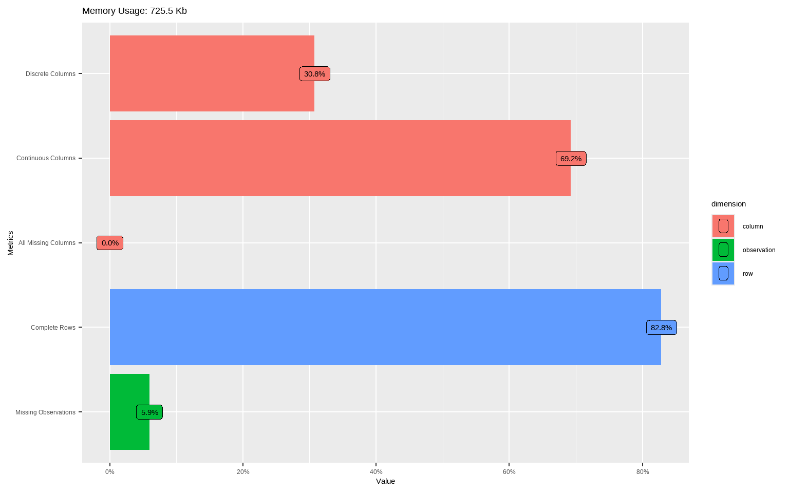
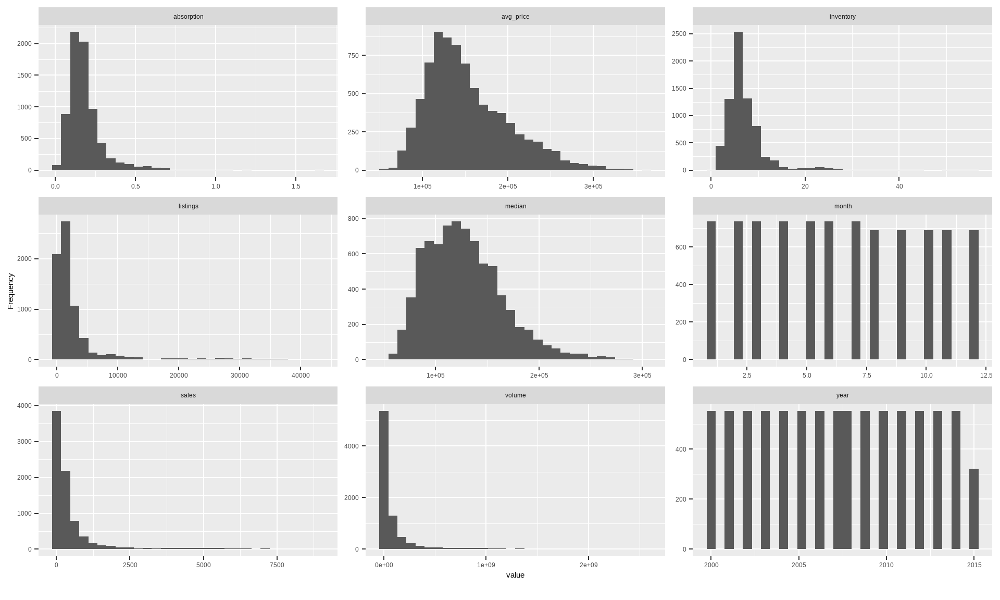
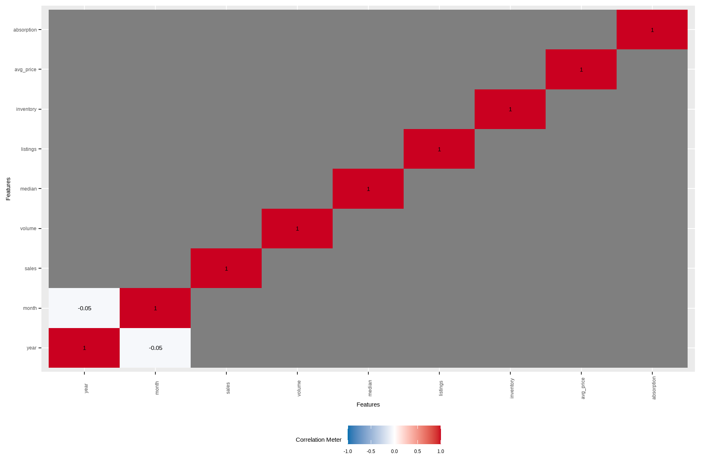
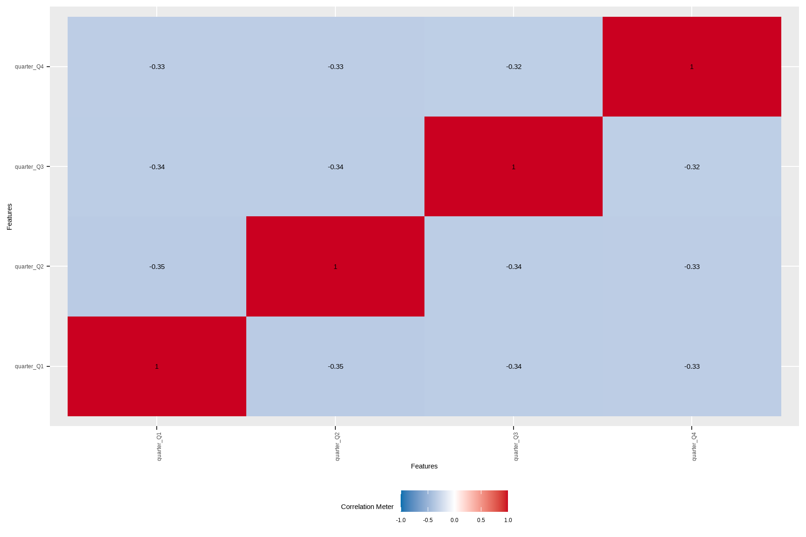
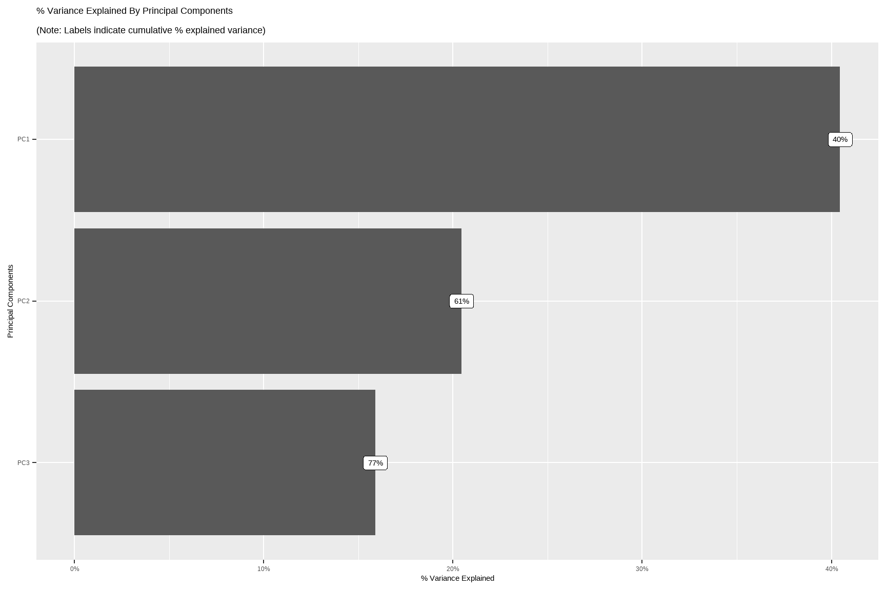
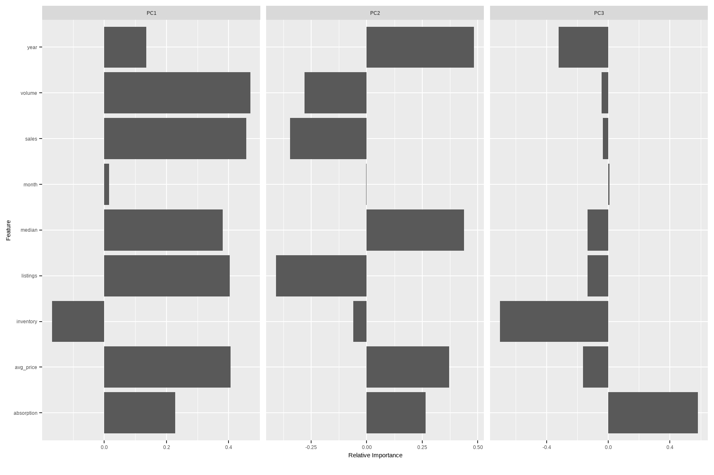
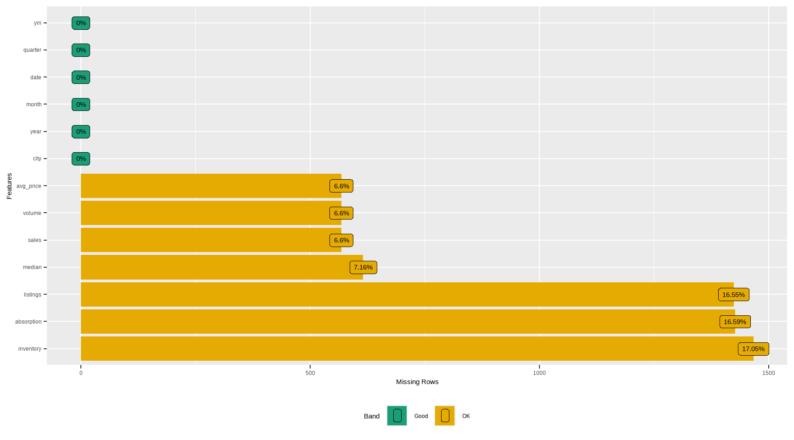
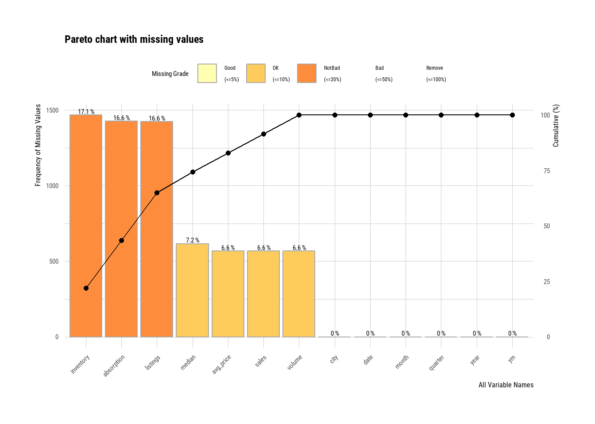
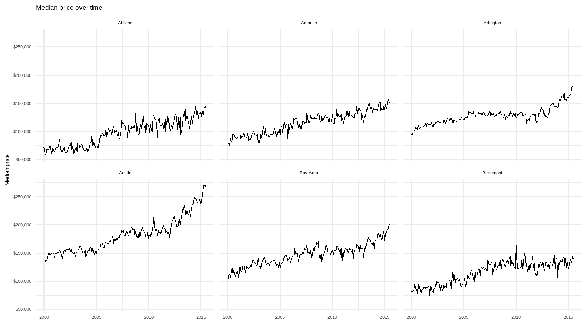
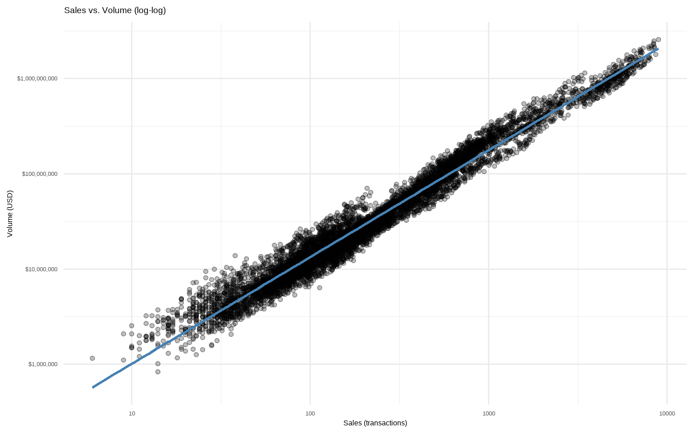

Chapter 53 Exploratory Data Analysis
Abstract. Exploratory data analysis is where an analyst learns what the data can and cannot support, before any model commits them to an answer. This chapter demonstrates a fast, business-oriented workflow on a housing panel: automated data reports, feature engineering aimed at interpretable marketing and finance constructs, missingness profiling, and error identification. Two distinctions organize that material. The first is the taxonomy separating data missing completely at random, at random, and not at random, which determines whether any repair is possible and which the data themselves cannot settle. The second is the difference between a value that cannot be right and one that is merely extreme, where deletion stops being cleaning and becomes an inferential act. Summary statistics appear in several forms, since the useful summary differs for a collaborator, a referee, and a stakeholder. A closing section takes up the cost of exploration itself, since an analyst who has already seen a pattern cannot afterwards test it as though encountering it for the first time, and weighs the three responses: sample splitting, pre-specification, and accurate description. The chapter also covers the low-code path and a template for scheduled reports that refresh themselves.
Keywords: Exploratory data analysis; Data profiling; Feature engineering; Missing data; Outlier detection; Researcher degrees of freedom
Exploratory analysis occupies an uncomfortable position in the standard account of empirical work. It is universally practiced and almost never reported. A paper describes the model it fitted and the tests it ran, not the forty plots that preceded them, and the reader is left to infer that the specification arrived fully formed. It never does. Between the raw file and the first regression there is a long stretch of looking, and what happens in that stretch determines more about the eventual result than the choice of estimator does.
This chapter treats that stretch as a technical subject rather than as preparation for the real work. The argument is not that exploration should be avoided, which is impossible, nor merely that it should be disclosed, which is procedural. It is that exploration should be conducted so that its consequences remain legible: scripted rather than performed by hand, so that what was looked at is recoverable, and understood as consuming evidence, so that the analyst does not later test a hypothesis about a pattern they have already seen as though seeing it for the first time.
53.1 What Exploration Is For
Three questions occupy this stage, and they are worth separating because they fail in different ways.
The first is what the data are. Types, ranges, cardinality, and completeness sound like clerical matters, and they are, right up until a variable assumed to be continuous turns out to be a truncated count, or a panel assumed to be balanced turns out to lose half its units after a particular year. These facts constrain every model that follows. They are cheap to establish now and expensive to discover late.
The second is what the data can support. A question requires variation of a particular kind, in a particular place, and the data either contain it or they do not. If treated and untreated units do not overlap on the covariates that matter, no estimator recovers the contrast. If a key subgroup holds forty observations, no amount of modeling produces a credible subgroup effect. Settling this early prevents an entire analysis from being built on a comparison the data cannot make.
The third is what would have to be true for the analysis to be wrong, which is the question the rest of this volume develops at length. Exploration is where the candidate answers first become visible: the impossible value that suggests a coding error, the discontinuity that suggests a change in how a variable was collected, the association between missingness and the outcome that suggests the absent rows are not absent at random.
Only the first of these is served by running a profiling package and reading its output. The second and third require the analyst to hold a question in mind and interrogate the data against it. The workflow below automates the first so that attention is left over for the others.
This section demonstrates a fast, business-oriented EDA workflow on ggplot2::txhousing. We’ll generate automated reports, engineer interpretable features for marketing/finance contexts, profile missingness, identify errors/outliers, and provide quick interactive tools your stakeholders will actually use. Where possible, we keep everything reproducible in code and easy to extend for your own datasets.
# Core packages
# install.packages(c("tidyverse","lubridate","DataExplorer","dataReporter","skimr","rpivotTable","esquisse","dlookr"))
library(ggplot2)
library(dplyr)
library(tidyr)
library(lubridate)
library(ggplot2)
library(DataExplorer)
library(skimr)
library(dlookr)
# Data: ggplot2 ships with txhousing
data("txhousing", package = "ggplot2")
# Create a clean working copy with business-friendly engineered features
tx <- txhousing %>%
mutate(
date = make_date(year, month, 1),
# Average price per sale (proxy for ARPU-like metric in sales)
avg_price = ifelse(sales > 0, volume / sales, NA_real_),
# Absorption-like metric: sales per listing (how fast inventory turns)
absorption = ifelse(listings > 0, sales / listings, NA_real_),
# Months of inventory is already provided as `inventory`
# Seasonal and calendar features
quarter = factor(quarter(date), labels = c("Q1", "Q2", "Q3", "Q4")),
ym = factor(format(date, "%Y-%m")),
city = as.factor(city)
)
# A couple of quick sanity checks
stopifnot(all(
c(
"city",
"year",
"month",
"sales",
"volume",
"median",
"listings",
"inventory"
) %in% names(tx)
))
# Preview
dplyr::glimpse(tx)
#> Rows: 8,602
#> Columns: 13
#> $ city <fct> Abilene, Abilene, Abilene, Abilene, Abilene, Abilene, Abile…
#> $ year <int> 2000, 2000, 2000, 2000, 2000, 2000, 2000, 2000, 2000, 2000,…
#> $ month <int> 1, 2, 3, 4, 5, 6, 7, 8, 9, 10, 11, 12, 1, 2, 3, 4, 5, 6, 7,…
#> $ sales <dbl> 72, 98, 130, 98, 141, 156, 152, 131, 104, 101, 100, 92, 75,…
#> $ volume <dbl> 5380000, 6505000, 9285000, 9730000, 10590000, 13910000, 126…
#> $ median <dbl> 71400, 58700, 58100, 68600, 67300, 66900, 73500, 75000, 645…
#> $ listings <dbl> 701, 746, 784, 785, 794, 780, 742, 765, 771, 764, 721, 658,…
#> $ inventory <dbl> 6.3, 6.6, 6.8, 6.9, 6.8, 6.6, 6.2, 6.4, 6.5, 6.6, 6.2, 5.7,…
#> $ date <date> 2000-01-01, 2000-02-01, 2000-03-01, 2000-04-01, 2000-05-01…
#> $ avg_price <dbl> 74722.22, 66377.55, 71423.08, 99285.71, 75106.38, 89166.67,…
#> $ absorption <dbl> 0.10271041, 0.13136729, 0.16581633, 0.12484076, 0.17758186,…
#> $ quarter <fct> Q1, Q1, Q1, Q2, Q2, Q2, Q3, Q3, Q3, Q4, Q4, Q4, Q1, Q1, Q1,…
#> $ ym <fct> 2000-01, 2000-02, 2000-03, 2000-04, 2000-05, 2000-06, 2000-…53.2 Data Report
Automate a first-pass profile to see dimensions, types, basic completeness, and distributions.
Automation matters here for a reason beyond convenience. A profile produced by a script can be regenerated when the data are refreshed, diffed against the previous version, and inspected by someone who was not present the first time. A profile produced by clicking through a spreadsheet is none of those things, and its findings survive only in the analyst’s memory. The tools below reveal nothing a careful analyst could not find by hand. What they change is that the finding becomes reproducible and the cost of repeating it falls to nearly zero.

# Quick distribution sweep for numerics (great to spot skew and heavy tails)
plot_histogram(tx, ncol = 3L)
# Pairwise correlations (continuous); useful for multicollinearity hints
# Note: if your dataset has many numerics, set cor_args = list(use = "pairwise.complete.obs")
plot_correlation(tx, type = "continuous")
# If you want correlations/associations among discrete variables:
# (city and quarter here; may be high-cardinality)
plot_correlation(tx %>% select(city, quarter), type = "discrete")
# Quick PCA map for continuous variables (after standardizing)
DataExplorer::plot_prcomp(tx %>%
select(where(is.numeric)) %>%
na.omit()
)

Tip: For very wide tables, use maxcat in DataExplorer functions to cap cardinality for cleaner plots.
53.3 Feature Engineering
Business-minded transforms often beat fancy models. The goal is interpretability and better signal-to-noise.
The warning attached to this step is that feature engineering is where exploration most easily becomes specification search. Constructing a ratio because it corresponds to a quantity the field already reasons about is defensible. Constructing forty ratios and keeping the three that correlate with the outcome is a specification search conducted before the specification exists, and it leaves no trace in the model that eventually gets reported. The distinction is not visible in the code, which is identical either way. It lies in whether the construct was motivated before its relationship to the outcome was inspected. Where a transform was chosen by looking, the honest description of the resulting estimate is exploratory, and Section 54.10 sets out what that costs.
fe_tx <- tx %>%
mutate(
# Year-month numeric for time-aware models
t_index = as.integer(zoo::as.yearmon(date)),
# Price momentum: rolling median (by city) as a simple trend proxy
median_roll3 = dplyr::lag(slider::slide_dbl(median, mean, .before = 2, .complete = TRUE), 0),
# Volume-per-listing: marketing pipeline proxy (dollars per active listing)
vol_per_listing = ifelse(listings > 0, volume / listings, NA_real_),
# Seasonality flags
is_peak_summer = month(date) %in% 6:8,
is_december = month(date) == 12
)
head(fe_tx)
#> # A tibble: 6 × 18
#> city year month sales volume median listings inventory date avg_price
#> <fct> <int> <int> <dbl> <dbl> <dbl> <dbl> <dbl> <date> <dbl>
#> 1 Abile… 2000 1 72 5.38e6 71400 701 6.3 2000-01-01 74722.
#> 2 Abile… 2000 2 98 6.51e6 58700 746 6.6 2000-02-01 66378.
#> 3 Abile… 2000 3 130 9.28e6 58100 784 6.8 2000-03-01 71423.
#> 4 Abile… 2000 4 98 9.73e6 68600 785 6.9 2000-04-01 99286.
#> 5 Abile… 2000 5 141 1.06e7 67300 794 6.8 2000-05-01 75106.
#> 6 Abile… 2000 6 156 1.39e7 66900 780 6.6 2000-06-01 89167.
#> # ℹ 8 more variables: absorption <dbl>, quarter <fct>, ym <fct>, t_index <int>,
#> # median_roll3 <dbl>, vol_per_listing <dbl>, is_peak_summer <lgl>,
#> # is_december <lgl>One-hot encode high-utility discrete features (keep top cities to avoid huge design matrices)
Note: dummify() will create binary indicators and drop the original variable by default.
To avoid exploding dimensions, we lump rare cities first.
fe_tx_small <- fe_tx %>%
mutate(city_lumped = forcats::fct_lump_n(city, n = 10, other_level = "Other"))
tx_dummy <-
dummify(fe_tx_small %>% select(-city), select = "city_lumped")
names(tx_dummy)[1:15]
#> [1] "year" "month" "sales" "volume"
#> [5] "median" "listings" "inventory" "avg_price"
#> [9] "absorption" "t_index" "median_roll3" "vol_per_listing"
#> [13] "date" "quarter" "ym"# Separate continuous and discrete columns for targeted transformations/modeling
spl <- split_columns(tx)
names(spl)
#> [1] "discrete" "continuous" "num_discrete" "num_continuous"
#> [5] "num_all_missing"Rules of thumb:
- Normalize skewed monetary variables (e.g., \(\log(\text{volume}+1)\)) before linear modeling.
- Group rare categories and avoid too many dummies relative to \(n\).
- Create business KPIs:
avg_price,absorption,vol_per_listing, and simple momentum features.
53.4 Missing Data
Missingness is information. First detect, then decide: delete, impute, or model it explicitly.
Detection does not settle the decision, because the same missingness rate can arise from mechanisms with entirely different consequences. The standard taxonomy separates three. Values are missing completely at random when the probability of absence is unrelated to anything, observed or not, and dropping incomplete rows then costs precision and nothing else. Values are missing at random when that probability depends on observed variables. Complete-case analysis is now biased, but the bias is repairable, because the variables driving the absence are available to condition on. Values are missing not at random when the probability depends on the unobserved value itself, and this is the case no imputation procedure repairs, because the information required to repair it is exactly what is absent.
Nothing in the data distinguishes the second case from the third. The pattern of missingness is observable. The mechanism generating it is an assumption, of the same kind as the identifying assumptions treated elsewhere in this volume. That is why the profiling below is worth doing carefully and is still not decisive on its own. It shows where the holes are and which observed variables predict them, which is enough to rule out the first case and to argue about the other two, but not enough to establish which obtains. Where the choice changes the conclusion, it belongs in the sensitivity analysis rather than in a preprocessing step nobody reports.
One practical corollary: keep an indicator for what was missing. If the missingness is informative, the indicator carries signal that imputation would otherwise destroy. If it is not, the indicator is harmless.
# Counts by variable
profile_missing(tx)
#> # A tibble: 13 × 3
#> feature num_missing pct_missing
#> <fct> <int> <dbl>
#> 1 city 0 0
#> 2 year 0 0
#> 3 month 0 0
#> 4 sales 568 0.0660
#> 5 volume 568 0.0660
#> 6 median 616 0.0716
#> 7 listings 1424 0.166
#> 8 inventory 1467 0.171
#> 9 date 0 0
#> 10 avg_price 568 0.0660
#> 11 absorption 1427 0.166
#> 12 quarter 0 0
#> 13 ym 0 0
# Simple tidy summary (counts and proportions)
tx %>%
summarise(across(everything(),
~ sprintf(
"%d (%.1f%%)", sum(is.na(.)), 100 * mean(is.na(.))
),
.names = "{.col}")) %>%
pivot_longer(everything(), names_to = "variable", values_to = "n_pct_na") %>%
arrange(desc(n_pct_na)) %>%
head(12)
#> # A tibble: 12 × 2
#> variable n_pct_na
#> <chr> <chr>
#> 1 median 616 (7.2%)
#> 2 sales 568 (6.6%)
#> 3 volume 568 (6.6%)
#> 4 avg_price 568 (6.6%)
#> 5 inventory 1467 (17.1%)
#> 6 absorption 1427 (16.6%)
#> 7 listings 1424 (16.6%)
#> 8 city 0 (0.0%)
#> 9 year 0 (0.0%)
#> 10 month 0 (0.0%)
#> 11 date 0 (0.0%)
#> 12 quarter 0 (0.0%)# Example: median imputation for a few numerics (for demonstration only)
# (In modeling, prefer imputations *within* resampling using recipes/caret/tidymodels.)
tx_imputed <- tx %>%
mutate(
sales = ifelse(is.na(sales), median(sales, na.rm = TRUE), sales),
listings = ifelse(is.na(listings), median(listings, na.rm = TRUE), listings),
inventory = ifelse(is.na(inventory), median(inventory, na.rm = TRUE), inventory),
median = ifelse(is.na(median), median(median, na.rm = TRUE), median)
)
skimr::skim(tx_imputed %>% select(sales, listings, inventory, median))| Name | tx_imputed %>% select(sal… |
| Number of rows | 8602 |
| Number of columns | 4 |
| _______________________ | |
| Column type frequency: | |
| numeric | 4 |
| ________________________ | |
| Group variables | None |
Variable type: numeric
| skim_variable | n_missing | complete_rate | mean | sd | p0 | p25 | p50 | p75 | p100 | hist |
|---|---|---|---|---|---|---|---|---|---|---|
| sales | 0 | 1 | 524.44 | 1077.59 | 6 | 90.0 | 169.0 | 432.00 | 8945.0 | ▇▁▁▁▁ |
| listings | 0 | 1 | 2896.76 | 5499.11 | 0 | 756.0 | 1283.0 | 2527.75 | 43107.0 | ▇▁▁▁▁ |
| inventory | 0 | 1 | 7.01 | 4.22 | 0 | 5.2 | 6.2 | 7.57 | 55.9 | ▇▁▁▁▁ |
| median | 0 | 1 | 127821.26 | 36014.21 | 50000 | 101725.0 | 123800.0 | 147900.00 | 304200.0 | ▃▇▃▁▁ |
# dlookr helpers (diagnose and visualize NA concentration)
diagnose(tx)
#> # A tibble: 13 × 6
#> variables types missing_count missing_percent unique_count unique_rate
#> <chr> <chr> <int> <dbl> <int> <dbl>
#> 1 city factor 0 0 46 0.00535
#> 2 year integer 0 0 16 0.00186
#> 3 month integer 0 0 12 0.00140
#> 4 sales numeric 568 6.60 1712 0.199
#> 5 volume numeric 568 6.60 7495 0.871
#> 6 median numeric 616 7.16 1538 0.179
#> 7 listings numeric 1424 16.6 3703 0.430
#> 8 inventory numeric 1467 17.1 296 0.0344
#> 9 date Date 0 0 187 0.0217
#> 10 avg_price numeric 568 6.60 7917 0.920
#> 11 absorption numeric 1427 16.6 6880 0.800
#> 12 quarter factor 0 0 4 0.000465
#> 13 ym factor 0 0 187 0.0217
plot_na_pareto(tx)
Best practice: Impute inside a modeling pipeline (e.g., recipes::step_impute_median()), and consider adding “was missing” flags to retain signal from missingness patterns.
53.5 Error Identification
Catch anomalies early: impossible values, data entry glitches, or KPI mismatches.
The category deserves more care than it usually gets, because two very different things travel under the name outlier. One is a value that cannot be right: a negative price, a sale recorded before its listing, a month with more transactions than there were listings to transact. These are errors, they have a cause in the recording process, and removing them is a cleaning decision any reader would endorse. The other is a value that is extreme but entirely possible, and here removal is not cleaning but an inferential act. Dropping the observations that sit furthest from the fitted relationship will improve the fit, always, and the improvement carries no information about whether the relationship is real.
The operational test is whether the exclusion rule can be stated without reference to the outcome. A rule that removes months where sales exceed listings is mechanical, checkable, and independent of any model. A rule that removes the twelve cities with the largest residuals is none of those. It is a specification choice, and it should be reported as one and varied among the robustness checks. The diagnostics below identify candidates. They do not license deletion.
- Logical constraints
violations <- tx %>%
mutate(
v_sales_negative = sales < 0,
v_volume_negative = volume < 0,
v_listings_negative= listings < 0,
v_inventory_negative = inventory < 0
) %>%
summarise(across(starts_with("v_"), ~sum(.x, na.rm = TRUE)))
violations
#> # A tibble: 1 × 4
#> v_sales_negative v_volume_negative v_listings_negative v_inventory_negative
#> <int> <int> <int> <int>
#> 1 0 0 0 0- Price coherence: median vs. average price (avg_price = volume/sales)
Large gaps are not necessarily errors, but extreme ratios can flag data issues.
coherence <- tx %>%
mutate(avg_price = ifelse(sales > 0, volume / sales, NA_real_),
ratio = median / avg_price) %>%
filter(!is.na(ratio), is.finite(ratio)) %>%
summarise(
n = n(),
ratio_p01 = quantile(ratio, 0.01),
ratio_p99 = quantile(ratio, 0.99),
extreme = sum(ratio < 0.25 | ratio > 4, na.rm = TRUE)
)
coherence
#> # A tibble: 1 × 4
#> n ratio_p01 ratio_p99 extreme
#> <int> <dbl> <dbl> <int>
#> 1 7985 0.682 0.992 0- Outliers (univariate) with
dlookr
out_summary <- diagnose_outlier(tx %>% select(sales, volume, median, listings, inventory, avg_price))
out_summary %>% arrange(desc(outliers_cnt)) %>% head(10)
#> # A tibble: 6 × 6
#> variables outliers_cnt outliers_ratio outliers_mean with_mean without_mean
#> <chr> <int> <dbl> <dbl> <dbl> <dbl>
#> 1 volume 1116 13.0 563924698. 106858621. 33125498.
#> 2 sales 899 10.5 3057. 550. 234.
#> 3 listings 742 8.63 17522. 3217. 1568.
#> 4 inventory 437 5.08 20.8 7.17 6.29
#> 5 median 147 1.71 248251. 128131. 125879.
#> 6 avg_price 143 1.66 300786. 153202. 150528.# Full, human-readable data quality report (HTML) with dataReporter
# install.packages("dataReporter")
library(dataReporter)
makeDataReport(tx) # Generates an HTML report in your working directory53.6 Summary statistics
Concise summaries for continuous and categorical variables, plus grouped business KPIs.
The reason to produce several of these rather than one is that a summary table serves three audiences with incompatible needs. A collaborator wants completeness, including the variables that turned out not to matter, because they are checking the work rather than reading a result. A referee wants the quantities that bear on credibility: cell sizes, missingness rates, and the dispersion of the variables carrying identification, since those determine whether the design can support the claim at all. A stakeholder wants the three numbers that change a decision and will not read past them. Producing one table and asking all three to use it guarantees that at least two are served badly.
| Name | tx |
| Number of rows | 8602 |
| Number of columns | 13 |
| _______________________ | |
| Column type frequency: | |
| Date | 1 |
| factor | 3 |
| numeric | 9 |
| ________________________ | |
| Group variables | None |
Variable type: Date
| skim_variable | n_missing | complete_rate | min | max | median | n_unique |
|---|---|---|---|---|---|---|
| date | 0 | 1 | 2000-01-01 | 2015-07-01 | 2007-10-01 | 187 |
Variable type: factor
| skim_variable | n_missing | complete_rate | ordered | n_unique | top_counts |
|---|---|---|---|---|---|
| city | 0 | 1 | FALSE | 46 | Abi: 187, Ama: 187, Arl: 187, Aus: 187 |
| quarter | 0 | 1 | FALSE | 4 | Q1: 2208, Q2: 2208, Q3: 2116, Q4: 2070 |
| ym | 0 | 1 | FALSE | 187 | 200: 46, 200: 46, 200: 46, 200: 46 |
Variable type: numeric
| skim_variable | n_missing | complete_rate | mean | sd | p0 | p25 | p50 | p75 | p100 | hist |
|---|---|---|---|---|---|---|---|---|---|---|
| year | 0 | 1.00 | 2007.30 | 4.50 | 2000.00 | 2003.00 | 2007.00 | 2011.00 | 2.015000e+03 | ▇▆▆▆▅ |
| month | 0 | 1.00 | 6.41 | 3.44 | 1.00 | 3.00 | 6.00 | 9.00 | 1.200000e+01 | ▇▅▅▅▇ |
| sales | 568 | 0.93 | 549.56 | 1110.74 | 6.00 | 86.00 | 169.00 | 467.00 | 8.945000e+03 | ▇▁▁▁▁ |
| volume | 568 | 0.93 | 106858620.78 | 244933668.97 | 835000.00 | 10840000.00 | 22986824.00 | 75121388.75 | 2.568157e+09 | ▇▁▁▁▁ |
| median | 616 | 0.93 | 128131.44 | 37359.58 | 50000.00 | 100000.00 | 123800.00 | 150000.00 | 3.042000e+05 | ▅▇▃▁▁ |
| listings | 1424 | 0.83 | 3216.90 | 5968.33 | 0.00 | 682.00 | 1283.00 | 2953.75 | 4.310700e+04 | ▇▁▁▁▁ |
| inventory | 1467 | 0.83 | 7.17 | 4.61 | 0.00 | 4.90 | 6.20 | 8.15 | 5.590000e+01 | ▇▁▁▁▁ |
| avg_price | 568 | 0.93 | 153202.38 | 48188.98 | 54782.61 | 118099.79 | 142510.87 | 181806.06 | 3.626882e+05 | ▃▇▃▁▁ |
| absorption | 1427 | 0.83 | 0.18 | 0.11 | 0.01 | 0.12 | 0.16 | 0.21 | 1.650000e+00 | ▇▁▁▁▁ |
# City-level yearly KPIs
city_year <- tx %>%
group_by(city, year) %>%
summarise(
n_months = n(),
sales_total = sum(sales, na.rm = TRUE),
volume_total = sum(volume, na.rm = TRUE),
median_price = median(median, na.rm = TRUE),
avg_inventory = mean(inventory, na.rm = TRUE),
.groups = "drop"
) %>%
arrange(city, year)
head(city_year, 10)
#> # A tibble: 10 × 7
#> city year n_months sales_total volume_total median_price avg_inventory
#> <fct> <int> <int> <dbl> <dbl> <dbl> <dbl>
#> 1 Abilene 2000 12 1375 108575000 67100 6.47
#> 2 Abilene 2001 12 1431 114365000 70050 6.62
#> 3 Abilene 2002 12 1516 118675000 67100 5.84
#> 4 Abilene 2003 12 1632 135675000 71850 5.68
#> 5 Abilene 2004 12 1830 159670000 73200 4.56
#> 6 Abilene 2005 12 1977 198855000 92400 3.82
#> 7 Abilene 2006 12 1997 227530000 99900 4.48
#> 8 Abilene 2007 12 2003 232062585 102800 4.96
#> 9 Abilene 2008 12 1651 192520335 106900 6.32
#> 10 Abilene 2009 12 1634 202357756 109050 6.12Figure 53.1 traces median listing price by month for the six largest Texas cities in the dataset.
# Example visual: price over time for a few major cities
top_cities <- tx %>%
count(city, sort = TRUE) %>%
slice_head(n = 6) %>%
pull(city)
tx %>%
filter(city %in% top_cities) %>%
ggplot(aes(date, median)) +
geom_line(linewidth = 0.5) +
facet_wrap(~ city) +
scale_y_continuous(labels = scales::dollar_format()) +
labs(
title = "Median price over time",
x = NULL,
y = "Median price"
) +
theme_minimal(base_size = 12)
Figure 53.1: Median listing price over time for the six Texas cities with the most observations.
Figure 53.2 plots transaction volume against sales count on log-log axes, with an OLS smoother to highlight the bivariate relationship.
# Volume vs. Sales (log-scale to reduce skew)
tx %>%
filter(sales > 0, volume > 0) %>%
ggplot(aes(sales, volume)) +
geom_point(alpha = 0.25) +
scale_x_log10() +
scale_y_log10(labels = scales::dollar_format()) +
geom_smooth(method = "lm",
se = FALSE,
color = "steelblue") +
labs(title = "Sales vs. Volume (log-log)",
x = "Sales (transactions)",
y = "Volume (USD)") +
theme_minimal(base_size = 12)
Figure 53.2: Volume against sales (log-log) across all Texas city-month observations, with an OLS smoother.
53.7 Exploration and Confirmation
Everything above changes what the analyst knows, and that is the difficulty. A hypothesis test asks how surprising the observed data would be if the null were true, and the calculation assumes the hypothesis was fixed before the data were seen. An analyst who has already plotted the outcome against a dozen candidate predictors, noticed which relationship looked strongest, and then tested that one has not performed the test the \(p\)-value describes. The reported figure answers a question nobody asked: how surprising this result would be under the null, had this particular comparison been chosen in advance. It was not chosen in advance. It was chosen by looking.
The problem does not require any intent to deceive, and it does not require running many tests and reporting the best. It is enough to have made a sequence of reasonable decisions, each defensible on its own, each informed by a glance at the data: to have excluded a period that looked anomalous, pooled two categories that behaved similarly, used the log because the raw variable was skewed. Every one of those may be the right call. Collectively they define a path through a garden of alternatives, and the analysis that emerges at the end has been fitted to the data in ways the standard errors do not know about. Section 54.10 treats the literature-level consequences.
Three responses are available, and they are not equivalent.
The first is to separate the samples. Explore on one partition, confirm on another held back and untouched, and the confirmatory test recovers its meaning because the data it uses were not consulted while the specification was being formed. This is the cleanest solution and the most expensive, since it spends observations on discipline, and it is unavailable when the sample is small or the interesting variation sits in a subgroup too thin to split.
The second is to fix the analysis in advance. A pre-specified plan converts exploratory freedom into a commitment made before the outcome is visible. It is not free either: real data surprise the analyst, and a plan rigid enough to bind is often a plan that turns out to have specified the wrong model. The usual compromise is to pre-specify the primary analysis and label everything else as what it is.
The third, always available and too rarely taken, is to describe the analysis accurately. An exploratory result reported as exploratory is a contribution: it identifies a pattern worth testing on data that do not yet exist. The same result reported as a confirmatory test of a hypothesis is a claim the evidence does not support. What makes the difference is a sentence in the text, and the discipline to write it. Chapter 55 takes up the mechanism by which such patterns eventually become knowledge, which is that somebody collects new data and looks again.
53.8 Not so code-y process
53.8.1 Quick and dirty way to look at your data
53.9 Shiny-app based Tableau style
The skeleton below sketches a minimal Shiny dashboard that lets the user pick a city and renders the corresponding median-price trend line.
# Minimal Shiny-style dashboard idea (skeleton)
# shinyApp(
# ui = fluidPage(
# titlePanel("TX Housing Explorer"),
# sidebarLayout(
# sidebarPanel(selectInput("city", "City", choices = sort(unique(tx$city)), selected = "Houston")),
# mainPanel(plotOutput("trend"))
# )
# ),
# server = function(input, output, session) {
# output$trend <- renderPlot({
# tx %>%
# filter(city == input$city) %>%
# ggplot(aes(date, median)) + geom_line() +
# labs(x = NULL, y = "Median Price") +
# theme_minimal()
# })
# }
# )53.10 Customize your daily/automatic report
# Option A: One-liner automated HTML report (DataExplorer)
DataExplorer::create_report(tx, y = "median") # sets target variable for focus
# Option B: Knit this Rmd on a schedule (cron/Task Scheduler)
# rmarkdown::render("eda_txhousing.Rmd", output_format = "html_document")# Optionally explore additional EDA helpers
# install.packages(c("chronicle","descriptr"))
library(chronicle)
library(descriptr)
# Tip: Use these packages selectively; their APIs evolve.
# Prefer stable verbs above; consult vignettes for current functions.53.10.1 Appendix: Small “gotchas” to keep in mind
- For correlation heatmaps, ensure you’re not mixing units without scaling, and use
scale. = TRUEin PCA. - For discrete correlations, high-cardinality features (like many cities) can make matrices unwieldy. Thus, lump or select top-\(k\) first.
- Imputation should be inside resampling to avoid leakage.
- KPI checks (e.g.,
medianvsvolume/sales) are diagnostics, not proofs of error. Hence, investigate outliers before removal.